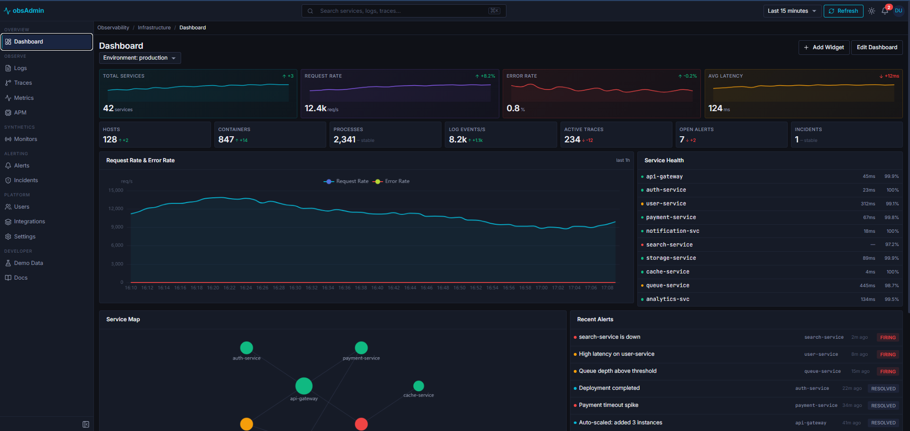
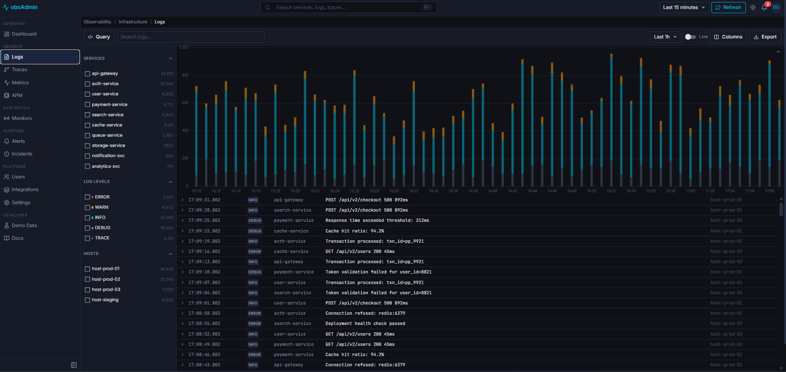
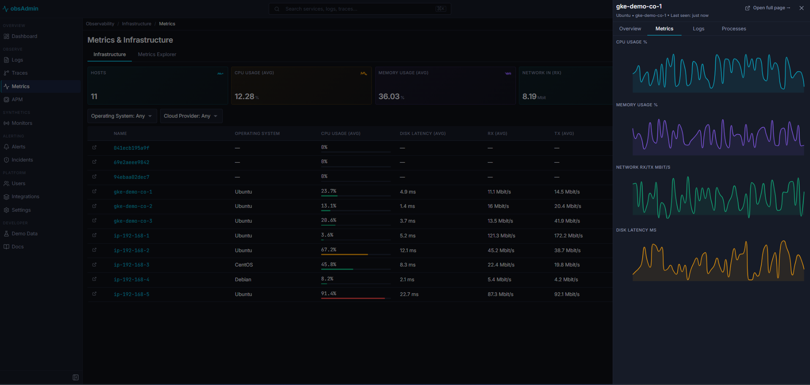
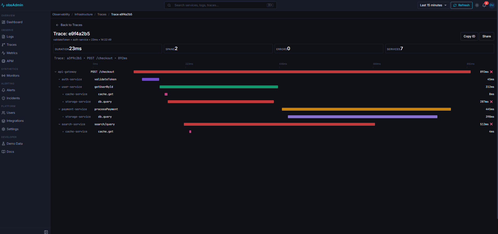
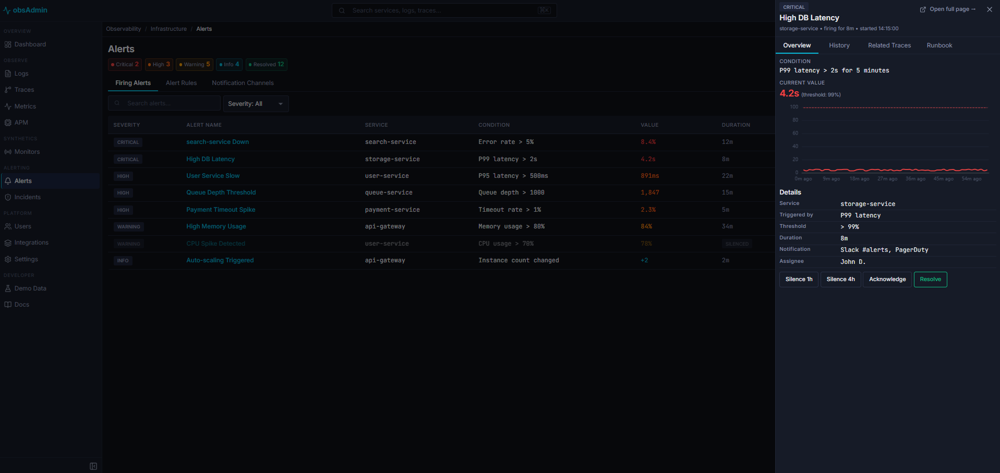
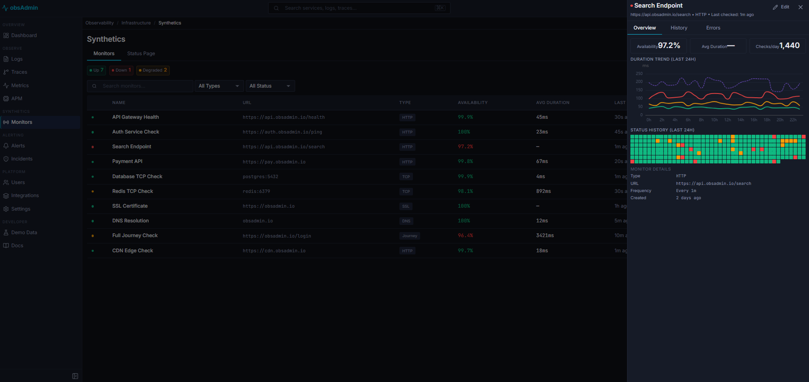
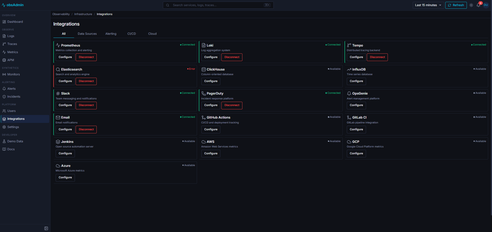

A production-ready React dashboard for observability — logs, metrics, traces, APM, alerts, incidents, and synthetics. Dark-first, light-capable. Built for modern engineering teams.
Every page built with precision. Dark-mode optimized, responsive, and ready to deploy.







Purpose-built components for every observability workflow. No generic dashboards — every page designed for its data.
Two complete MUI v9 theme objects. Toggle instantly. Zero hardcoded hex colors — everything responds to theme mode.
Time series, histograms, service maps, latency percentiles, sparklines. All theme-aware with transparent backgrounds.
TanStack Virtual for 100k+ row log streams. Compact 28px rows, inline expansion, live tail with auto-scroll pause.
Toggle between simple search and full Monaco editor. Syntax highlighting, custom dark/light theme, JetBrains Mono.
Firing alerts, alert rules with inline toggles, incident timeline, severity-colored everything. Silence, acknowledge, resolve.
Keyboard-driven modal. Search services, traces, pages. Arrow key navigation. Works everywhere via AppShell listener.